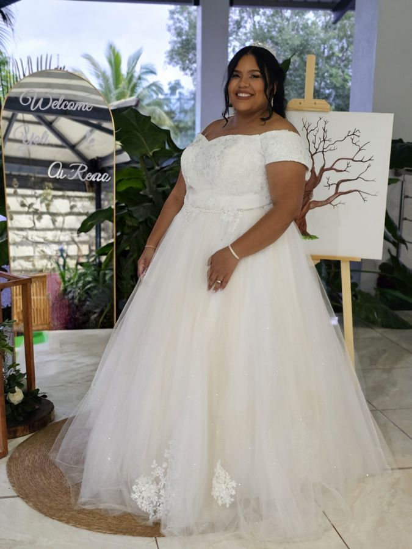

Más de Tres Décadas Vistiendo Tus Momentos Inolvidables
En Juana de Jesús • Atelier concebimos cada prenda femenina como una obra de arquitectura suave, diseñada para honrar tu silueta, tu estilo y la trascendencia de cada ocasión.
Tradición Artesanal y Precisión en el Entalle
Durante más de 30 años, Juana de Jesús ha perfeccionado el arte del patronaje a medida y la alta costura femenina desde su estudio en Villa Altagracia, extendiendo su atención personalizada a clientas en Santo Domingo, Bonao y Santiago.
A diferencia de la confección comercial en serie, en nuestro Atelier ninguna silueta se adapta a un molde prefabricado: el molde nace íntegramente a partir de las proporciones reales de cada mujer. Desde la ilusión de unos Quince Años (XV años) o un cumpleaños especial, pasando por el orgullo de una graduación o la armonía de una boda y su cortejo (matching), hasta la sobriedad impecable de la sastrería ejecutiva y ministerial.

✦ Confección Real a MedidaLos Cuatro Pilares de Nuestro Atelier
Patronaje Individual
Cada vestido o conjunto sastre se traza desde cero para tu figura, asegurando que hombros, busto, cintura y caída luzcan en armonía natural.Armonía en Cortejos (Matching)
Dominamos el arte de coordinar paletas de color y textiles para novias, madres, madrinas y cortejos familiares, favoreciendo a cada dama según su silueta.Sastrería con Porte y Recato
Especialistas en sastrería ejecutiva para uniforme individual y trajes ministeriales femeninos con acabados de alta durabilidad y prestancia.Atención Privada sin Prisas
Trabajamos estrictamente bajo cita previa en nuestro estudio de Villa Altagracia o mediante visita VIP a domicilio en Santo Domingo, Bonao y Santiago.Operación Respaldada por Bridge to Solutions
Juana de Jesús • Atelier opera formalmente bajo la estructura corporativa de Bridge to Solutions, garantizando seriedad en los tiempos de entrega, contratos de confección y emisión de Comprobantes Fiscales (NCF) para clientes individuales, eventos nupciales, graduaciones, ministerios e instituciones.
Registro ONAPI No. 856888 • RNC: 133494442